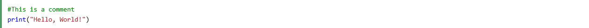
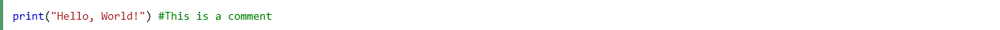
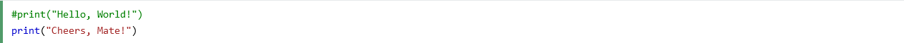
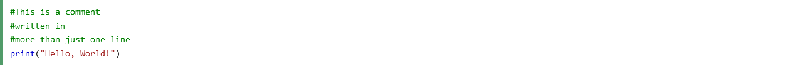
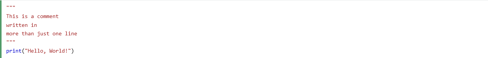

Comments
You are currently on the "Comments" section of the website.
If you wish to return to the Home Page, you need to click on "Ten Things to Know About Discovering Python: A Beginner's Guide" or simply click here.
Comments can be used to explain Python code.
Comments can be used to make the code more readable.
Comments can be used to prevent execution when testing code.
Comments starts with a #, and Python will ignore them:
Comments can be placed at the end of a line, and Python will ignore the rest of the line:
A comment does not have to be text that explains the code, it can also be used to prevent Python from executing code:
Python does not really have a syntax for multi line comments.
To add a multiline comment you could insert a # for each line:
Or, you can use a multiline string.
Since Python will ignore string literals that are not assigned to a variable, you can add a multiline string (triple quotes) in your code, and place your comment inside it:
As long as the string is not assigned to a variable, Python will read the code, but then ignore it, and you have made a multiline comment.